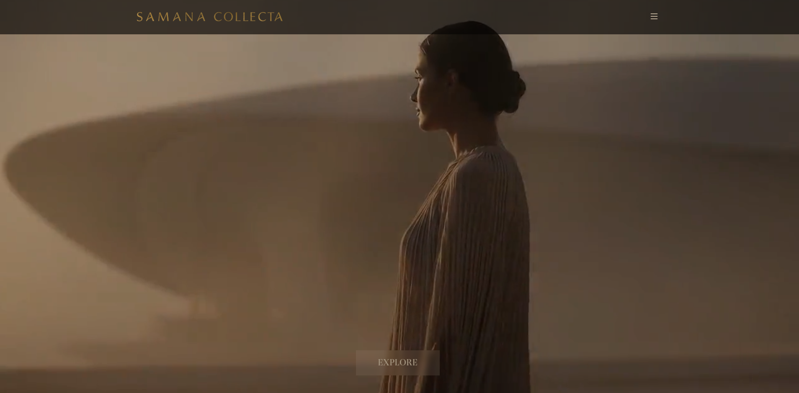

A stronger foundation for growth
Align your next website or system with the customers and services you want to support, so investment follows clear business priorities.
Project manager & software engineer · Dubai, UAE
I’m Najeeb Anka, a project manager and senior software engineer. I help turn business priorities into clear plans, coordinated teams, and digital solutions that support how your business works and grows.
How I help your business
Make room for growth, see where delivery stands, simplify operations, and help your team take ownership.
Align your next website or system with the customers and services you want to support, so investment follows clear business priorities.
Know what is progressing, what needs attention, and which decisions come next—with clear milestones and ownership.
Connect tools and simplify repeated tasks to reduce manual work and make handovers easier for your team.
Give people clear responsibilities, practical guidance, and shared knowledge so they can make informed decisions and keep work moving.
01 / Selected work

Visit websiteReal estate · Brand experience
A brand experience shaped around SAMANA Collecta’s luxury positioning. The visual presentation brings the brand’s identity and lifestyle focus into a dedicated digital experience.
 Visit website
Visit website
Real estate · Corporate website
The corporate website for SAMANA Developers, bringing its real estate identity and business presence together online. The presentation connects the company’s identity with its wider digital presence.
 Visit website
Visit website
Real estate · Project showcase
A dedicated showcase for SAMANA’s property developments. The website puts the project portfolio at the centre of the experience, giving visitors a focused introduction to the developments under the brand.
02 / What I do
I connect business priorities with the people, project decisions, and engineering work needed to put them into practice.
Requirements, priorities, and delivery schedules that give the team a shared direction and make the next steps clear.
Team coordination, technical guidance, and knowledge sharing that help people work through decisions and deliver together.
Hands-on development of web applications, APIs, and connected business systems, grounded in the needs of the project.
03 / How I approach delivery
A practical approach to moving from a business need to work the team can plan, discuss, and deliver.
Clarify the goal, requirements, and constraints before deciding what to build.
Break requirements into priorities, stages, and responsibilities the team can act on.
Discuss progress, resolve questions, and keep technical decisions aligned with the project.
Check the work against requirements, document what matters, and support the transition.
04 / Capabilities
A broad foundation across management, engineering, and evolving tools. Technology choices follow the project’s needs, with room to learn and adapt.
Exploring AI tools for research, planning, prototyping, and documentation, with human judgement guiding how outputs are used.
A little about me
My background combines project management, IT management, software engineering, and teaching. I bring that experience to defining the work, coordinating the team, and helping people understand the decisions behind the solution.
More about my journey →From the notebook
Project management · 3 min read
Turn a project goal into a usable delivery plan with clear outcomes, milestones, owners, dependencies, and a regular review rhythm.
Read articleLeadership · 3 min read
Support technical teams with shared outcomes, clear ownership, useful feedback, proportionate decision-making, and deliberate knowledge sharing.
Read articleProject management · 3 min read
Make project updates easier to act on with a clear status, meaningful progress, visible risks, and explicit decisions with owners and dates.
Read article